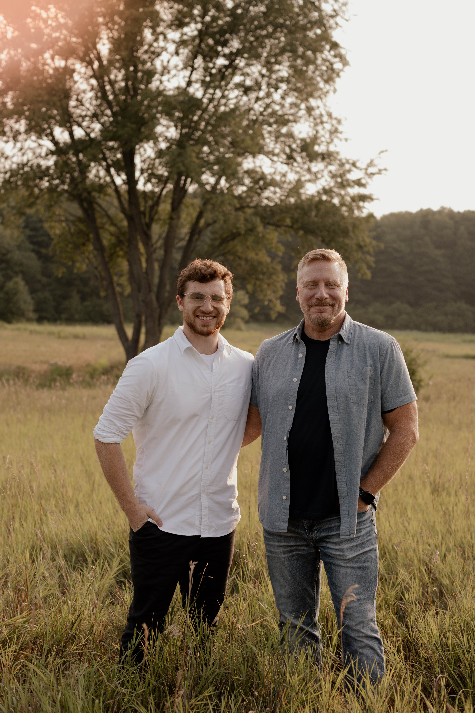

As it is embarassing to write about myself, I will do it for the class. I am Sam Martignon, and to sum up my life into a word, it would be expectations. I have always been someone who people expect to be great. I say that in the most humble way I can because I don't see that in myself very often. I want to be sucessful and well liked of course, but I don't think its because I was really meant to be that way. My motivating factor in life (minus my faith) is to live up to the expectations that have been placed upon me, which brings me to the list of things I have done with my life.
This list is not meant to be impressive of me, but more to be impressive on how crazy others influences can be. I did all of these simply trying to live up to the people who believed in me. I have lived my life out of trying to make the people who I love proud, and I will continue to put my best effort forward to do that. In all honesty, I am still very unsure of who I am or what I can do, but putting my best effort forward is all I can promise, and that is a honest promise.

The picture above in my Dad. He has by far the biggest influence on my life, I want to become at least of the man he is. He is a computer scientist and although my love for programming is not very high, I want to be in the computer world thanks to my pure admiration for him. He is a great man, and as is son I am very proud of him. He also expects great things from me, but unlike everyone else, he understands that I have failed and that I always can't be great. He is one of the only ones in my life who not only comforts me when I stumble, but encourages me to keep moving forward. He has taught me to accept failure, learn from it, and move forward to accomplish something I am proud of. He is truly my rolemodel, and my personal bio would not be complete without him.
To lighten the mood, here is a couple fun facts about me! I am a huge fan of Star Wars and Game of Thrones. Star Wars will always be my favorite thing, but Game of Thrones in near unmatched when it comes to world building and overall plot development. If you get to know me, I will sprinkle little Game of Thrones references in much of my day to day! So to end this bio, I shall honorably end my bio with the Night Watch Oath.
Night gathers, and now my watch begins. It shall not end until my death. I shall take no wife, hold no lands, father no children. I shall wear no crowns and win no glory. I shall live and die at my post. I am the sword in the darkness. I am the watcher on the walls. I am the fire that burns against the cold, the light that brings the dawn, the horn that wakes the sleepers, the shield that guards the realms of men. I pledge my life and honor to the Nights Watch, for this night and all the nights to come.”